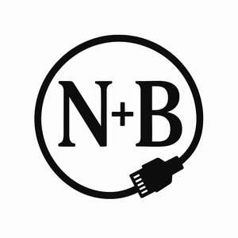

Trade Mark Journal No.2025/046 14 November 2025
UK00004284585 27 October 2025 (9)

- Class 9
- Computer network adapters; Network cables; Network cabling; Adapters for wireless network access; Interface network modems; Telephone socket outlets; Computer network server; Network routers; Network access server hardware; Computer network switches; Universal serial bus [USB] dongle [Wireless network adapters]; Network servers; Computer network routers; USB Dongles [Wireless network adapters]; LAN [local area network] access points for connecting network computer users; Network communication devices; Computer network hubs; Computer network bridges; Network hubs; Network junction points for telephone exchange networks; Computer network hardware; Relay sockets; LAN [local area network] computer cards for connecting portable computer devices to computer networks; WAN [wide area network] hardware; Network boards; Sockets, plugs and other contacts [electric connections]; Plugs, sockets and other contacts [electric connections]; Wide area network (WAN) routers; LAN [local operating network] hardware; Connector sockets (Electric -); Socket outlets (Electric -); Network communication equipment; Network access server operating software; Wireless local area network devices; Communication software for connecting computer network users; Multi-outlet socket blocks; Network communication apparatus; Mesh network software; Network cards; VPN [virtual private network] hardware; Electrical sockets; Communication software for connecting global computer networks; Software for network and device security; Network facsimile servers; Cable adapters; Terminals for telephone networks; NAS (Network attached Storage); Network dialers; Computer software for wireless network communications; Adapters for connection between media devices; Computer networks; WAN [wide area network] operating software; Transistor sockets; LAN [local area network] operating software; Ethernet adapter; Sockets, plugs and other contacts [electric connectors]; Network management apparatus; Power adapters for use in vehicle lighter sockets; Video local area network controllers; Threaded electrical cable connectors; Network monitoring cameras; Ethernet adapters; VPN [virtual private network] operating software; Communications networks; Access interfaces for managed private circuit networks; Optical networks; Remote control sockets; Network management computer software; Network management software; Cable connectors; Computer programs for network management; Telecommunications networks; Aerial sockets; Computer software for communication between computers over a local network; Electrical cable connectors; Software for accessing information on a global computer network; Plug connections [electric]; Network operating system programs.
MULTIMART ECOMMERCE LTD